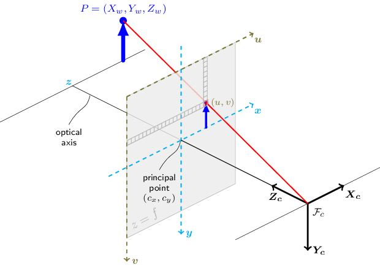

重点推荐一下常用相机投影及畸变模型（针孔|广角|鱼眼）_畸变 模型 比较_泠山的博客-CSDN博客 6 , 介绍的非常详细。
相机模型以及投影笔记¶
\(P_w\) 是世界坐标系下的3D点，\(P_c\) 是相机坐标系下的3D点，\(p\) 是图像屏幕下的2d像素坐标点。一个无畸变的相机变换如下：
$$ s p = K[R|t] P_w$$
\(K\)是相机内参矩阵(camera intrinsic matrix), \(R\) 和 \(t\) 分别是从世界坐标系到相机坐标系的旋转和平移变换(rotation and translation)。
\(s\)是投影变换的任意缩放尺度，不是相机模型的一部分。
相机内参矩阵\(K\) 将相机坐标系下的3D点投影到2D像素坐标。
$$ p = KP_c$$
$$
K = \begin{bmatrix}
f_{x} & 0 & c_{x} \ 0 & f_{y} & c_y \ 0 & 0 & 1
\end{bmatrix}
$$
因此，
$$
s \begin{bmatrix} u \ v \ 1 \end{bmatrix} = \begin{bmatrix}
f_{x} & 0 & c_{x} \ 0 & f_{y} & c_y \ 0 & 0 & 1 \end{bmatrix}
\begin{bmatrix} X_c \ Y_c \ Z_c \end{bmatrix}
$$
相机内参矩阵不依赖于场景。因此，一旦估计，只要焦距固定（可能是变焦镜头），就可以重复使用。因此，如果来自相机的图像按一个因子缩放，则所有这些参数都需要按相同的因子缩放。
世界坐标系\(P_w\)到相机坐标系\(P_c\)的变化是通过\(R\) 和 \(t\) 的变换进行的。
$$
P_{c} = \begin{bmatrix} R & t \ 0 & 1 \end{bmatrix} P_{w}
$$
相机坐标系\(P_c\)到单位平面(等价于焦距f=1)的归一化坐标是
$$
\begin{gather}
x' = \frac {X_{c}}{Z_{c}} \
y' = \frac {Y_{c}}{Z_{c}} \
\end{gather}
$$
又有
$$ \begin{bmatrix} R & t \ 0 & 1 \end{bmatrix} =
\begin{bmatrix}
r_{11} & r_{12} & r_{13} & t_{x} \
r_{21} & r_{22} & r_{23} & t_{y} \
r_{31} & r_{32} & r_{33} & t_{z} \
0 & 0 & 0 & 1
\end{bmatrix}
$$
所以
$$
P_{c} = Z_{c} \begin{bmatrix} x' \ y' \ 1 \end{bmatrix}
= \begin{bmatrix} R & t \ 0 & 1 \end{bmatrix} P_{w}
= \begin{bmatrix}
r_{11} & r_{12} & r_{13} & t_{x} \
r_{21} & r_{22} & r_{23} & t_{y} \
r_{31} & r_{32} & r_{33} & t_{z} \
0 & 0 & 0 & 1
\end{bmatrix}
\begin{bmatrix} X_w \ Y_w \ Z_w \ 1 \end{bmatrix}
$$
故 \(sp = KP_{c} = K[R|t]P_{w}\) 的形式是：
$$
s \begin{bmatrix} u \ v \ 1 \end{bmatrix}
= \begin{bmatrix} f_{x} & 0 & c_{x} \ 0 & f_{y} & c_y \ 0 & 0 & 1 \end{bmatrix}
\begin{bmatrix} X_c \ Y_c \ Z_c \end{bmatrix}
= Z_{c} \begin{bmatrix} f_{x} & 0 & c_{x} \ 0 & f_{y} & c_y \ 0 & 0 & 1 \end{bmatrix}
\begin{bmatrix} x' \ y' \ 1 \end{bmatrix}
= \begin{bmatrix} f_{x} & 0 & c_{x} \ 0 & f_{y} & c_y \ 0 & 0 & 1 \end{bmatrix}
\begin{bmatrix}
r_{11} & r_{12} & r_{13} & t_{x} \
r_{21} & r_{22} & r_{23} & t_{y} \
r_{31} & r_{32} & r_{33} & t_{z} \
0 & 0 & 0 & 1
\end{bmatrix}
\begin{bmatrix} X_w \ Y_w \ Z_w \ 1 \end{bmatrix}
$$
如果\(Z_{c} \neq 0\)， 则有
$$
\begin{bmatrix} u \ v \ 1 \end{bmatrix} =
\begin{bmatrix} f_{x} & 0 & c_{x} \ 0 & f_{y} & c_y \ 0 & 0 & 1 \end{bmatrix}
\begin{bmatrix} x' \ y' \ 1 \end{bmatrix}
= \begin{bmatrix} f_{x}x' + c_{x} \ f_{y}y'+c_{y} \ 1 \end{bmatrix}
= \begin{bmatrix} f_{x}\frac{X_c}{Z_c} + c_{x} \ f_{y}\frac{Y_c}{Z_c}+c_{y} \ 1 \end{bmatrix}
$$
化简得到：
$$ \begin{bmatrix} u \ v \end{bmatrix} = \begin{bmatrix} f_{x}x' + c_{x} \ f_{y}y'+c_{y} \end{bmatrix}
= \begin{bmatrix} f_{x}\frac{X_c}{Z_c} + c_{x} \ f_{y}\frac{Y_c}{Z_c}+c_{y} \end{bmatrix}
$$
下图是针孔相机模型的示意图

真实的镜头通常会有一定的畸变，大部分是径向畸变(radial distortion)，还有轻微的切向畸变(tangential distortion)。因此，上述模型应该扩展为：
^fe87b2
$$
r^{2}= x'{2}+y'
$$
$$
\begin{bmatrix} x' \ y' \end{bmatrix} = \begin{bmatrix} \frac{X_c}{Z_c} \ \frac{Y_c}{Z_c}\end{bmatrix} Z_c \neq 0
$$
畸变参数为径向系数k1、k2、k3、k4、k5和k6，p1和p2为切向畸变系数，s1、s2、s3和s4为薄棱镜畸变系数。 OpenCV 中不考虑高阶系数。更多关于相机畸变可以参考opencv的说明1。
鱼眼相机模型（fisheye camera model）¶
参考来自opencv官方文档2
令 P 为世界参考系中坐标 X 的 3D 点（存储在矩阵 X 中） P 在相机参考系中的坐标向量为
$$
X_{c}= RX + T
$$
记 \(x\), \(y\), \(z\)是\(X_c\)的三个坐标
$$
\begin{gather}
x = X_{c_{1}} \
y = X_{c_{2}} \
z = X_{c_{3}} \
\end{gather}
$$
点\(P\)对应的针孔投影坐标为\([a, b]\) 为：
$$
\begin{gather}
a = \frac{x}{z} & and & b = \frac{y}{z} \
&r^{2} = a^{2} + b^{2} & \
& \theta = atan(r) & \
\end{gather}
$$
鱼眼畸变:
$$ \theta_{d} = \theta(1 + k_{1}\theta^{2} + k_{2}\theta^{4}+ k_{3}\theta^{6}+ k_{4}\theta^{8})$$
使用等距投影得到畸变点\([x',y']\)的坐标:
$$
\begin{gather}
x' = \frac{\theta_{d}}{r}a \
y' = \frac{\theta_{d}}{r}b \
\end{gather}
$$
最后，转换到图像坐标。最终像素坐标\([u,v]\):
$$
\begin{gather}
u = f_{x}(x' + \alpha y') + c_{x} \
v = f_{y}y' + c_{y} \
\end{gather}
$$
疑惑这里的\(u\)为啥和\(y'\)相关呢?
应该还是跟标定模型有关，如果\(\alpha\)为\(0\)，就跟\(y'\) 无关了。
在UmeTrack代码中，先使用\(\theta\) 代替\(\theta_d\) 计算\(x', y'\), 再将畸变系数乘上去。
原理上应该就是先算归一化平面上的像点 \([x', y']\). 为啥不直接用公式\([X_{c}/Z_{c}, Y_{c}/Z_{c}]\) 也就是 \([a, b]\) 呢？
参考畸变点\([x',y']\)的坐标公式， 当使用\(\theta\) 代替\(\theta_d\) 时， \(\frac{\theta_{d}}{r}\) 还是不为1。因为这里使用了等距投影模型\(r = f \theta\)，而不是透视投影模型\(r = ftan\theta\) 。

投影过程与代码实现¶
下图是投影模型示意图3。

正向投影¶
1. 世界坐标系到相机坐标系¶
两个坐标系的转换比较简单，就是旋转矩阵 + 平移矩阵
旋转矩阵是绕X， Y，Z 轴旋转获得。
R 属于世界坐标系到相机坐标系的旋转矩阵， 旋转矩阵为R = R(z) * R(y) * R(x), 具体根据相机外参标定时规定的旋转方向来定，为 3 × 3 矩阵。
t 为世界坐标系原点到相机坐标系原点的平移矩阵，为3 x 1 矩阵。
世界坐标到相机坐标的映射为：
2. 相机坐标系到归一化坐标平面¶
射线到平面上的投影都是等效的，只是相差一个尺度因子，因此为了方便计算可以进行归一化，即投影到f=1的归一化平面上。注意这一步会丢失深度信息。
根据相似三角形，显然有：
$$
\begin{gather}
\frac{z_{c}}{f}= \frac{x_{c}}{a} = \frac{y_{c}}{b} & f=1\
a = \frac{x_{c}}{z_{c}} & b = \frac{y_{c}}{z_{c}}
\end{gather}
$$
简化为：
$$
\begin{bmatrix} a \ b \ 1 \end{bmatrix} = \begin{bmatrix} x_{c} / z_{c} \ y_{c} / z_{c} \ 1 \end{bmatrix}
$$
归一化平面发生畸变¶
参考投影模型示意图，针孔模型在归一化平面的投影点为\(P_0\)
正常镜头畸变¶
参考上面的公式
鱼眼镜头畸变¶
如投影模型示意图所示， \(P=(x, y, z)\) 是相机空间上的3d点， \(P_{0}= (a, b)\)是在\(f=1\) 平面透视投影得到的点, 而鱼眼模型一般采用等距模型，此时的像点位置是\(p =(x', y')\) 。
根据相似三角形，显然有：
$$
\begin{gather}
R = \sqrt{x_{c}^{2}+ y_{c}^{2}}\
tan \theta = \frac{R}{z_{c}} = \frac{r}{f} = r (f = 1)\
\theta = arctan{\frac{R}{z_{c}}}
\end{gather}
$$
而鱼眼投影一般采用等距投影，因此：
$$
\begin{gather*}
r_{d} = \theta_{d} \
\because
distortion(\theta) = 1 + k_{1}\theta^{2} + k_{2}\theta^{4}+ k_{3}\theta^{6}+ k_{4}\theta^{8} \
\theta_{d} = \theta * distortion(\theta) \
\therefore r_{d} = \theta * distortion(\theta) = arctan{\frac{R}{z_{c}}} * distortion(arctan{\frac{R}{z_{c}}}) \
\end{gather}
$$
注意，畸变模型\(distortion(\theta) = 1 + k_{1}\theta^{2} + k_{2}\theta^{4}+ k_{3}\theta^{6}+ k_{4}\theta^{8}\) 不是唯一的，可能会采取不同的表达。
由相似可以从\(P_{0}= (a, b)\)得到畸变点\(p =[x',y']\)的坐标:
$$
\begin{gather}
\frac{r}{r_{d}} = \frac{a}{x'}= \frac{b}{ y'} \
\therefore
x' = \frac{r_{d}}{r}a \qquad y' = \frac{r_{d}}{r}b \
\end{gather*}
$$
3. 归一化平面坐标到像素平面¶
$$
\begin{bmatrix} u \ v \ 1 \end{bmatrix} =
\begin{bmatrix} f_{x} & 0 & c_{x} \ 0 & f_{y} & c_y \ 0 & 0 & 1 \end{bmatrix}
\begin{bmatrix} x' \ y' \ 1 \end{bmatrix}
= \begin{bmatrix} f_{x}x' + c_{x} \ f_{y}y'+c_{y} \ 1 \end{bmatrix}
$$
\([x', y']\) 是归一化平面做完畸变后的结果
反向投影¶
1. 像素平面到归一化平面¶
2.归一化平面到相机坐标系¶
归一化平面非畸变点\((a, b)\) 转换到 相机坐标下，这里需要知道每个点的深度信息。
$$
\begin{bmatrix} X_c \ Y_c \ Z_c \end{bmatrix} = Z_{c}\begin{bmatrix} a \ b \ 1 \end{bmatrix}
$$
如果在归一化平面发生畸变，则需要进行去畸变处理。
归一化平面去畸变¶
由于像素坐标\((u, v)\)是畸变后的点\((x', y')\)经过内参映射得到。因此需要将畸变点\((x', y')\)逆向去畸变为非畸变点\((a, b)\)。
重点就是由 \(\theta_{d}\) 推导 \(\theta\) 的过程，由于高次方程没有解析解，一般由牛顿迭代下降法求解数值解。
正常镜头去畸变¶
$$
\begin{gather*}
初始化：\
(a, b) = (x', y') \ \
迭代求解：\
(d_{x}, d_{y}) = (x', y') - distortion(a, b) \
(a, b) = (a, b) + (d_{x}, d_{y}) \ \
直到d_{x}, d_{y}误差足够小，得到非畸变点 (a, b)
\end{gather*}
$$
鱼眼镜头去畸变¶
鱼眼镜头除了可以用上面方面之外，还可以根据角度来计算，具体如下：
$$
\begin{gather*}
\theta_{d} = \theta(1 + k_{1}\theta^{2} + k_{2}\theta^{4}+ k_{3}\theta^{6}+ k_{4}\theta^{8}) \
\theta_{d}= r_{d} = \frac{\sqrt{x'^{2} + y'^{2}}}{f} = \sqrt{x'^{2} + y'^{2}} \quad (等距投影， f=1) \
let \quad \theta = \theta_{d} \
再由 牛顿迭代法算出 \theta, \quad
g(x) = x - f\frac{x}{f'(x)} \ \
\because tan \theta = \frac{r}{f} = r \quad (f=1) \
r_{d}= \theta_{d} \quad (等距投影) \ \
由相似可得：
\frac{r}{r_{d}} = \frac{a}{x'} = \frac{b}{y'} \\
\therefore 可以在单元平面上的畸变坐标(x', y') 得到非畸变点 (a, b), 即： \
a = \frac{r}{r_{d}} x' = \frac{tan\theta}{\theta_{d}}x' \
b = \frac{r}{r_{d}} y' = \frac{tan\theta}{\theta_{d}}y' \
\end{gather*}
$$
3.相机坐标系到世界坐标系¶
$$
\begin{gather}
P_{c} = \begin{bmatrix} R & t \ 0 & 1 \end{bmatrix} * P_{w} \
P_{w} = \begin{bmatrix} R & t \ 0 & 1 \end{bmatrix}^{-1} * P_{c} \
P_{w} = R(P_{c} - t)
\end{gather*}
$$
或者参考博客4的做法。
相机模型总结（针孔、鱼眼、全景）¶
相机模型总结（针孔、鱼眼、全景） - 知乎
相机的几种模型（针孔、等距、球模型） - 知乎
经典的成像模型要有一个步骤就是把三维坐标的点先投影到单位球(Unit Sphere)上，有时候这个单位球也叫Viewing Sphere
这部分的一篇经典论文是：Perspective Projection:The Wrong Imaging Model
为什么可以投影到单位球¶
无论是小孔成像模型还是其他模型，都可以看作是先把世界的点放缩到一个单位球。之所以可以这样做的原因是，从相机光心发射出的一条线，线上的点都会投影到同一个像素值。也就是说，我们在做投影的时候，放缩一个常量的结果是相同的。这一点在opencv的教程里是这样描述的：
Due to this mapping, all multiples k*Ph, for k≠0, of a homogeneous point represent the same point Ph. An intuitive understanding of this property is that under a projective transformation, all multiples of Ph are mapped to the same point. This is the physical observation one does for pinhole cameras, as all points along a ray through the camera's pinhole are projected to the same image point, e.g. all points along the red ray in the image of the pinhole camera model above would be mapped to the same image coordinate. This property is also the source for the scale ambiguity s in the equation of the pinhole camera model.
这部分内容想要有一个较全面（但是很基础）的了解，可以按照以下顺序阅读：
- Perspective Projection:The Wrong Imaging Model
- Models_of_classical_projections （用较多的函数图描绘了不同投影方程的距离差距、成像角度差距等）
- Various lens projections （使用实际图片展示不同投影模型的成像效果）
重新认识鱼眼镜头，VR球面图像的投影方式和鱼眼校正【双目VR摄影#V2】_哔哩哔哩_bilibili
openGL 坐标系/空间¶
OpenGL1.7空间Space
OpenGL-坐标系 - 简书
GPU编程和CG语言学习第二节（自我学习） - 知乎
将坐标变换为标准化设备坐标，通常有指定的几个步骤:

为了将坐标从一个坐标系变换到另一个坐标系，我们需要用到几个变换矩阵，最重要的几个分别是模型(Model)、观察(View)、投影(Projection)三个矩阵。
分步骤的原因是，可以用矩阵相乘把多个变换放在一起，再有就是每一阶段，在各自的空间里更好计算。
- 本地空间：
Local Sapce或者叫Object Space - 世界空间：
World space - 观察空间：
View Space，Camera Space或者Eye Space - 裁剪空间：
Clip Space - 屏幕空间：
Screen Space
参考链接¶
参考链接